SPRING-IOC源码解析-BEAN的产生
我们这边采用maven形式查看源码，因为gradle需要很长的配置工作，maven比较简单那，但是maven是不能编译源码的。
我是根据这篇文章解析源码的Spring IOC 容器源码分析
首先定义注入依赖，spring-context 会自动将 spring-core、spring-beans、spring-aop、spring-expression 这几个基础 jar 包带进来。
<dependency>
<groupId>org.springframework</groupId>
<artifactId>spring-context</artifactId>
<version>4.3.11.RELEASE</version>
</dependency>定义一个类AppConfig里面先不写东西
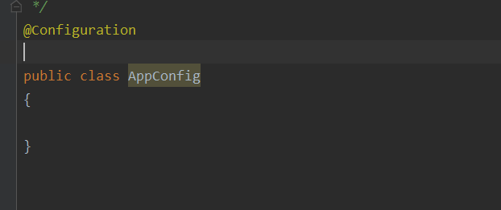
然后在test下的IocTest类启动Ioc容器
public class IocTest
{
/**
* Rigorous Test :-)
*/
@Test
public void shouldAnswerWithTrue(){
//启动ioc容器
AnnotationConfigApplicationContext context = new AnnotationConfigApplicationContext(AppConfig.class);
}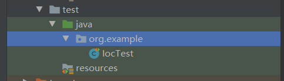
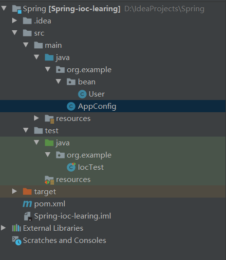
在bean目录下新建一个User类，
那么问题来了我们怎么将这个类交给Spring管理的？
网上的教程都是创建spring.xml,我们这边就用spring注解
@Component
public class User {
}注意，此时还没有交给spring容器去管理
这边特意做了一个验证
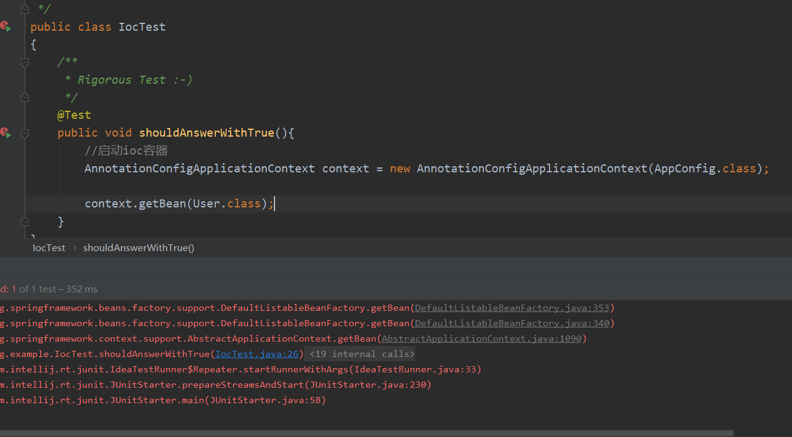
因为只是加了注解还不能够交给spring容器去管理
思考：
- 为什么会抛一个NoSuchBeanDefinitionException异常呢，
- BeanDefinition bean定义 承载bean属性：scope className mehtod—init
- bean:交给ioc容器管理的对象就是bean
要想交给spring容器管理，我们可以在Appconfig加一个扫描包
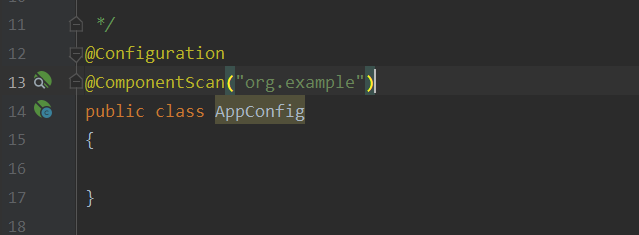
此时运行就能拿到
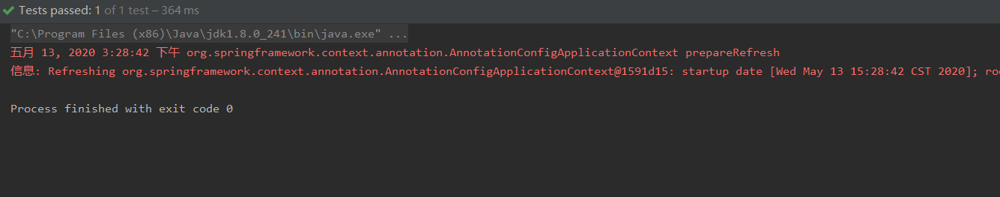
回到上面的问题BeanDefinition 是个什么东西呢？
从这可以看出BeanDefinition他是一个接口
public interface BeanDefinition extends AttributeAccessor, BeanMetadataElement{
//定义了一个single 单列
String SCOPE_SINGLETON = ConfigurableBeanFactory.SCOPE_SINGLETON;
定义了一个prototype 原型
String SCOPE_PROTOTYPE = ConfigurableBeanFactory.SCOPE_PROTOTYPE;
承载了许多bean属性和方法,就不细说了
void setBeanClassName(String beanClassName);
String getBeanClassName();
void setScope(String scope);
String getBeanClassName();
void setScope(String scope);
void setLazyInit(boolean lazyInit);
boolean isLazyInit();
void setDependsOn(String... dependsOn);
String[] getDependsOn();
void setAutowireCandidate(boolean autowireCandidate);
boolean isAutowireCandidate();
void setPrimary(boolean primary);
boolean isPrimary();
void setFactoryBeanName(String factoryBeanName);
String getFactoryBeanName();
void setFactoryMethodName(String factoryMethodName);
String getFactoryMethodName();
ConstructorArgumentValues getConstructorArgumentValues();
MutablePropertyValues getPropertyValues();
boolean isSingleton();
boolean isPrototype();
boolean isAbstract();
int getRole();
String getDescription();
String getResourceDescription();
BeanDefinition getOriginatingBeanDefinition();
}当然了 我们也可以构建Spring.xml，通过name来访问
<?xml version="1.0" encoding="UTF-8"?>
<beans xmlns="http://www.springframework.org/schema/beans"
xmlns:xsi="http://www.w3.org/2001/XMLSchema-instance"
xsi:schemaLocation="http://www.springframework.org/schema/beans http://www.springframework.org/schema/beans/spring-beans.xsd">
<bean id="user2" class="org.example.bean.User" scope="prototype"/>
<bean name="user" class="org.example.bean.User" scope="prototype"/>
</beans>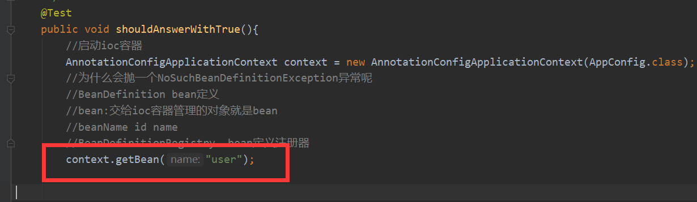
说明此时有个beanName这个属性，它可以通过id name找到对应得bean,
而id和name是交给BeanDefinitionRegistry（bean定义注册器）管理的，我们来看看它的源码
public interface BeanDefinitionRegistry extends AliasRegistry {
//注册BeanDefinition
void registerBeanDefinition(String beanName, BeanDefinition beanDefinition)
throws BeanDefinitionStoreException;
//beanName就是我们定义的id或者name
//而beanDefinition不就是承载bean属性嘛
.....
}接下来我们来验证一下我们为什么能拿到User对象
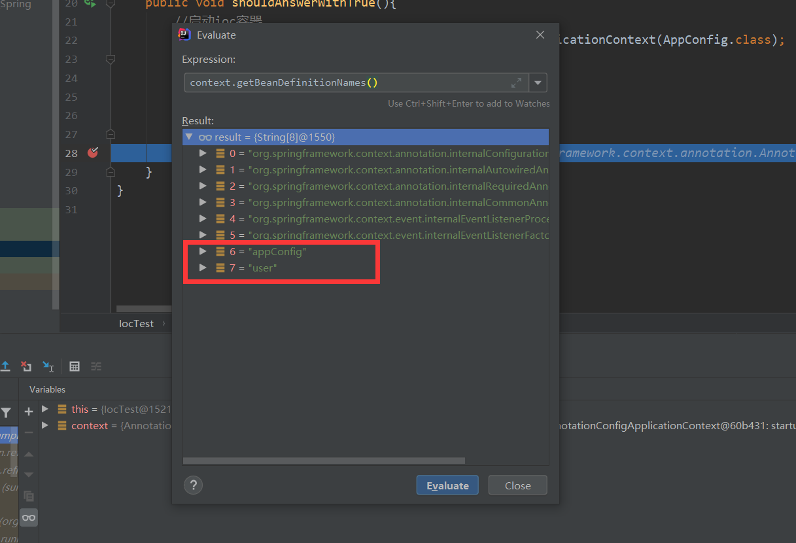
接下来再新建一个Fox，有什么方法不用定义去xml配置name和id就能直接交给spring管理呢
直接看图
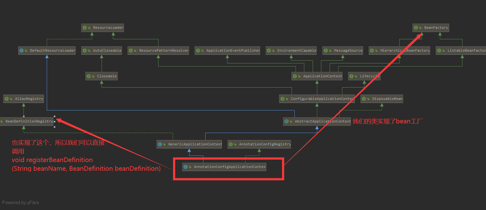
public class IocTest
{
/**
* Rigorous Test :-)
*/
@Test
public void shouldAnswerWithTrue(){
//启动ioc容器
AnnotationConfigApplicationContext context = new AnnotationConfigApplicationContext(AppConfig.class);
//为什么会抛一个NoSuchBeanDefinitionException异常呢
//BeanDefinition bean定义
//bean:交给ioc容器管理的对象就是bean
//beanName id name
//BeanDefinitionRegistry bean定义注册器
context.getBean("user");
//怎么将fox交给spring管理 将class对于的beanDefinition缓存到beanDefinitionMap beanName---beanDefinition(key,vule)
BeanDefinition beanDefinition = new RootBeanDefinition(Fox.class);
context.registerBeanDefinition("fox",beanDefinition);
context.getBean("fox");
}
}我们现在看一下
context.registerBeanDefinition("fox",beanDefinition)这句代码是怎么去调的，把”fox”放到什么位置。
它首先会调用我们工厂的注册方法
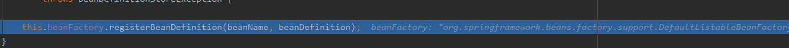
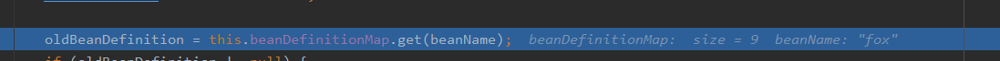
然后在这bean定义了一个Map，我们可以进去看看
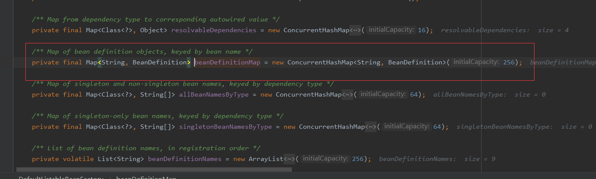
其实就是一个HashMap
然后通过put方法放进去
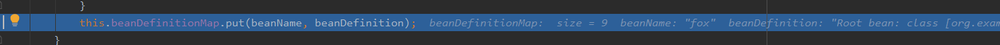
然后就可以看到fox，放到了beanDefinitionMap
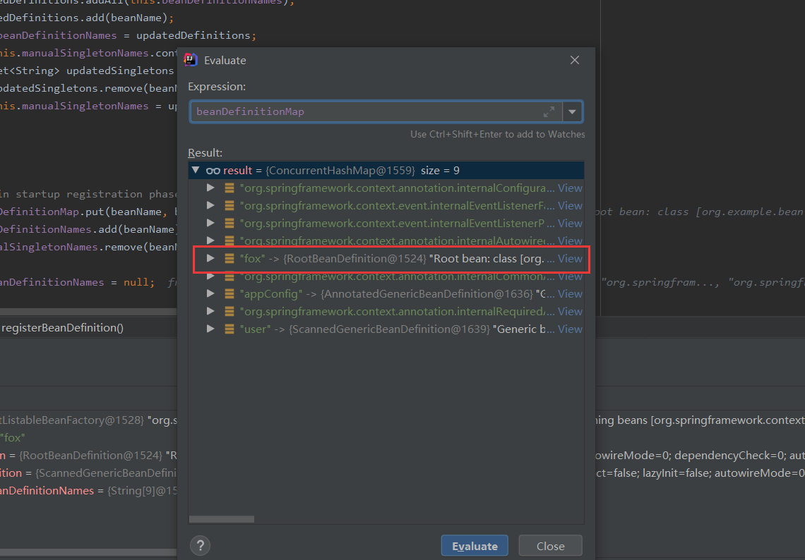
当然也可以不用设置name，直接去注册类型，
因为register底层一定会去调beanDefinitionMap的put方法 这里就不再验证了
BeanDefinition beanDefinition = new RootBeanDefinition(Fox.class);
context.register(Fox.class);
context.getBean("fox");算了，还是验证吧
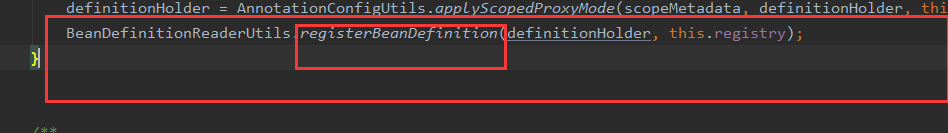
看最终还是调到了registerBeanDefinition吧，然后又回到我们的注册器
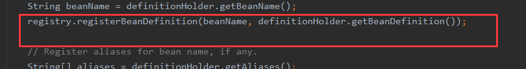
思考：不注册beanDefinition，能不能将对象交给spring容器管理呢
通过beanFactory可以拿到一个对象，
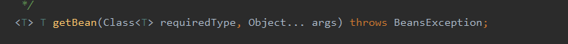
由上面的继承结构图可以知道我们的AnnotationConfigApplicationContext也实现了bean工厂，所以我们可以直接拿到bean工厂，直接看代码吧，说多了没用
public class IocTest
{
/**
* Rigorous Test :-)
*/
@Test
public void shouldAnswerWithTrue(){
//启动ioc容器
AnnotationConfigApplicationContext context = new AnnotationConfigApplicationContext(AppConfig.class);
//思考：不注册beanDefinition，能不能将对象交给spring容器管理呢
//beanFactory:bean工厂 对象
Monkey monkey = new Monkey();
//获取工厂
DefaultListableBeanFactory defaultListableBeanFactory = context.getDefaultListableBeanFactory();
//注册单例 将单例对象缓存到单例对象池中 defaultListableBeanFactory.registerSingleton("monkey",monkey);
context.getBean("monkey");
}
}结果显示是可以的
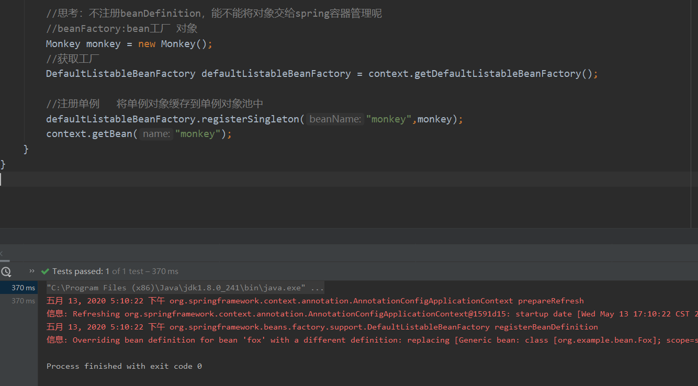
我么干脆看一下registerSingleton方法都做了什么
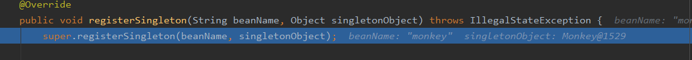
发现调它父类的注册方法，然后添加单例到单例对象池singletonObjects中
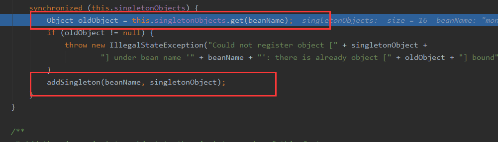
可以知道singletonObjects也是一个map
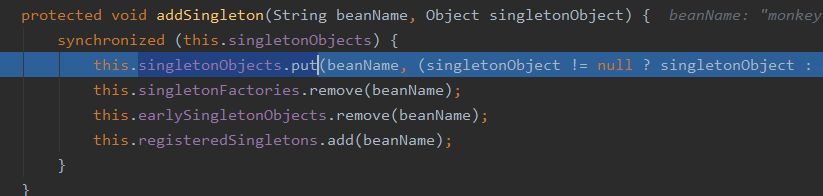
也就是说我们所有的单例都是从单例对象池singletonObjects中去拿的。
由此我们就得出结论：
- bean的注册原理：将class对于的beanDefinition缓存到beanDefinitionMap中singletonObjects。
- 将所有创建的单例对象缓存到单例对象池singletonObjects中，下次再去调用时就是在单例对象池中去拿的，这里我们可以验证一下
就是在这个方法里，我们继续看
这时候就拿到我们的monkey了
无论什么装配方式，例如xml,@import等，它们最终解析之后都是为了拿到beanDefinition，然后通过注册器注册到beanDefinitionMap中，总之beanDefinition作用是非常大的。
比如可以填充属性
我们先在Fox定义两个属性
import org.springframework.stereotype.Component;
@Component
public class Fox {
private String name;
private int age;
public String getName() {
return name;
}
public void setName(String name) {
this.name = name;
}
public int getAge() {
return age;
}
public void setAge(int age) {
this.age = age;
}
@Override
public String toString() {
return "Fox{" +
"name='" + name + '\'' +
", age=" + age +
'}';
}
}
public class IocTest
{
/**
* Rigorous Test :-)
*/
@Test
public void shouldAnswerWithTrue(){
//启动ioc容器
AnnotationConfigApplicationContext context = new AnnotationConfigApplicationContext(AppConfig.class);
BeanDefinition beanDefinition = new RootBeanDefinition(Fox.class);
//注册bean
context.registerBeanDefinition("fox",beanDefinition);
//填充普通属性 PropertyValues
beanDefinition.getPropertyValues().add("name","fox");
beanDefinition.getPropertyValues().add("age",20);
context.register(Fox.class);
System.out.println(context.getBean("fox"));
}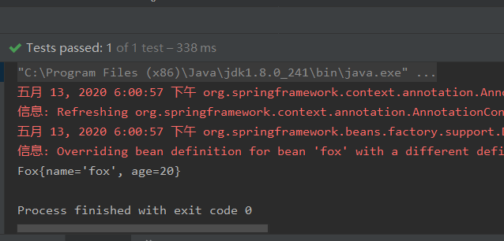